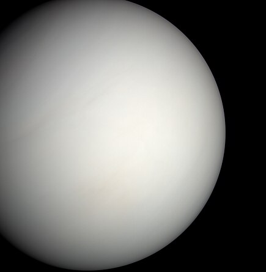
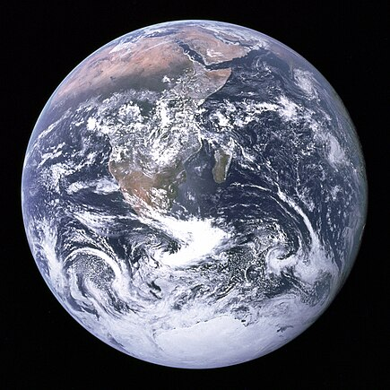

Mercury

The smallest planet and closest to the Sun, Mercury has extreme temperature fluctuations. It has no atmosphere and craters similar to the Moon.
Venus
Venus has a thick atmosphere of carbon dioxide, trapping heat and making it the hottest planet. Its surface is covered with volcanoes and dense clouds of sulfuric acid.
Earth
The only planet known to support life, Earth has abundant water and a protective atmosphere. It’s uniquely positioned to have moderate temperatures and diverse ecosystems.
Mars

Known as the "Red Planet," Mars has the largest volcano and canyon in the solar system. It’s a cold desert world with evidence of water in its distant past.
Jupiter
The largest planet, Jupiter is a gas giant with a famous Great Red Spot, a massive storm. It has over 70 moons, including Ganymede, the largest in the solar system.
Saturn

Saturn is best known for its stunning ring system, made of ice and rock. This gas giant also has more than 80 moons, including Titan, which has lakes of liquid methane.
Uranus

Uranus rotates on its side, making it unique among the planets. Its atmosphere is mostly hydrogen and helium, with a chilly blue hue from methane gas.
Neptune

The windiest planet in the solar system, Neptune is a deep blue gas giant. It has strong storms and a faint ring system surrounding it.